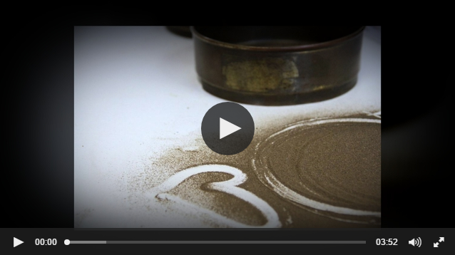
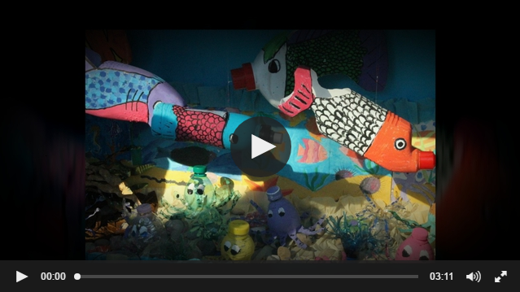
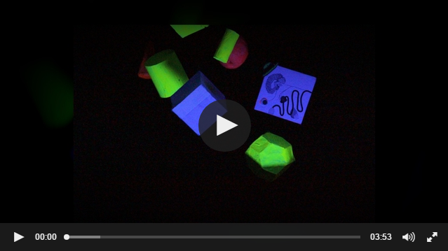
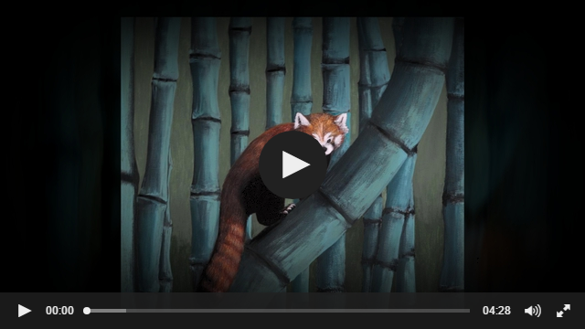
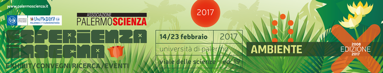
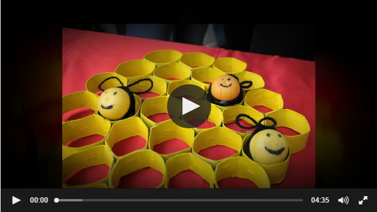

You are hereesperienza inSegna
esperienza inSegna
Esperienza inSegna 2017- Ambiente: consegna attestati e... sorrisi!
 E come di consueto, sul finire dell'ultima mattina della manifestazione, in un'aula gremita di gente, l'Associazione PALERMOSCIENZA ha consegnato alle scuole espositrici gli attestati di partecipazione alla decima edizione di Esperienza inSegna 2017 dedicata quest'anno all'Ambiente.
E come di consueto, sul finire dell'ultima mattina della manifestazione, in un'aula gremita di gente, l'Associazione PALERMOSCIENZA ha consegnato alle scuole espositrici gli attestati di partecipazione alla decima edizione di Esperienza inSegna 2017 dedicata quest'anno all'Ambiente.
Buona visione e alla prossima!
Esperienza inSegna 2017- Ambiente... siamo giunti all'ultimo giorno (ma non all'ultima pillola)!
 Ultimo giorno della manifestazione ricco dei suoi eventi caratteristici: esposizione degli exhibit, laboratori, spettacoli e conferenze. E per quanto riguarda queste ultime, nel programma del giorno, oltre alle repliche delle conferenze Ambiente e cambiamento globale a cura dell'Associazione Vulcani e Ambiente e L'uomo e l'ambiente a cura di EcoCampus Keystone srl, il ritorno della confernza interattiva Senso dell’ambiente e senso dell’umano, caratterizzata dalla formula gli studenti interrogano, rispondono Luciano Sesta dell'Università di Palermo e Matilde Passantino, divulgatore scientifico, con la partecipazione di Patrizia Rizzuto del Liceo scientifico S. Cannizzaro di Palermo, nel ruolo di moderatrice.
Ultimo giorno della manifestazione ricco dei suoi eventi caratteristici: esposizione degli exhibit, laboratori, spettacoli e conferenze. E per quanto riguarda queste ultime, nel programma del giorno, oltre alle repliche delle conferenze Ambiente e cambiamento globale a cura dell'Associazione Vulcani e Ambiente e L'uomo e l'ambiente a cura di EcoCampus Keystone srl, il ritorno della confernza interattiva Senso dell’ambiente e senso dell’umano, caratterizzata dalla formula gli studenti interrogano, rispondono Luciano Sesta dell'Università di Palermo e Matilde Passantino, divulgatore scientifico, con la partecipazione di Patrizia Rizzuto del Liceo scientifico S. Cannizzaro di Palermo, nel ruolo di moderatrice.
E mentre negli spazi esterni di Viale delle Scienze si svolgevano la visita guidata Osservazioni del Sole a cura dell'INAF – Osservatorio astronomico di Palermo e la parte esterna del laboratorio Fare per capire e Scienza Lab Terra e acqua ideato e curato dall'Associazione PALERMOSCIENZA, all'interno del Polididattico avvenivano le repliche del laboratorio Tutelare l'ambiente: ricerca bibliografica… "sostenibile" a cura del Sistema bibliotecario e Archivio storico d’Ateneo.
Due gli spettacoli in programma: Il fiume è vivo! a cura di Gloria Calì e Giuseppe Acuto della Scuola secondaria di 1° grado Cosmo Guastella di Misilmeri e Alla ricerca dei rifiuti scomparsi a cura di Giuseppina Marino e Maddalena Seminara dell'Istituto comprensivo Ninni Cassarà di Partinico, recitati entrambi dai bravi e giovanissimi attori dei rispettivi istituti.
Nella tarda mattinata si è svolta la tavola rotonda I banchi dello Stretto di Sicilia “candidati” alla Riserva della biosfera dell'UNESCO con la partecipazione di Aurelio Angelini della Fondazione Patrimonio UNESCO Sicilia, Agostino Tomasello dell'Università di Palermo e Angela Accardi della Soprintendenza del Mare e, in chiusura della manifestazione, il seminario pomeridiano La fisiologia dell’orecchio. Ipotesi sui processi che provocano la sensazione di piacere, armonia, in relazione alla musica a cura di Mario Ferreri, dottore in medicina.
A breve una pillola conclusiva dedicata alla consegna degli attestati che si è svolta nella parte finale della mattina.
A presto!
Penultimo giorno di Esperienza inSegna 2017... nona pillola!
 La nona mattina della manifestazione è iniziata con un calendario ricco di appuntamenti. Tra i nuovi spettacoli proposti, Una città pulita a cura di Valeria Macaluso e Francesca Seminara dell'Istituto comprensivo Ninni Cassarà di Partinico, mentre si sono svolte le repliche de Il fiume è vivo! spettacolo curato da Gloria Calì e Giuseppe Acuto della Scuola secondaria di 1° grado Cosmo Guastella di Misilmeri.
La nona mattina della manifestazione è iniziata con un calendario ricco di appuntamenti. Tra i nuovi spettacoli proposti, Una città pulita a cura di Valeria Macaluso e Francesca Seminara dell'Istituto comprensivo Ninni Cassarà di Partinico, mentre si sono svolte le repliche de Il fiume è vivo! spettacolo curato da Gloria Calì e Giuseppe Acuto della Scuola secondaria di 1° grado Cosmo Guastella di Misilmeri.
Sono continuate le visite guidate Osservazione del Sole a cura dell'INAF - Osservatorio astronomico di Palermo presso l'Edificio 8 di Viale delle Scienze, mentre negli spazi del Polididattico, oltre alla mostra degli exhibit, si sono succedute le seguenti conferenze: La robotica per il monitoraggio ambientale a cura di Antonio Chella dell'Università di Palermo, Genesi: fermo immagine su un mondo che scompare a cura di Marco Picone dell'Università di Palermo e del fotografo Valerio Bellone, Ambienti extra-solari: alla ricerca di una Terra 2.0 a cura di Antonio Maggio dell'INAF - Osservatorio astronomico di Palermo, La gestione dei rifiuti verso un'economia circolare a cura i Gaspare Viviani dell'Università di Palermo.
Laboratorio del giorno Tutelare l'ambiente: ricerca bibliografica… "sostenibile" a cura del Sistema bibliotecario e Archivio storico d’Ateneo.
Nel pomeriggio, presso la Sala dei 99 di Palazzo Branciforte di Palermo, si è svolto lo spettacolo Il Sale della Terra di Wim Wenders e Juliano Ribeiro Salgado.
Ci vediamo domani per l'ultimo giorno!
Il secondo mercoledì con l'ottava pillola di Esperienza inSegna
Siamo dunque giunti all'ottavo giorno della manifestazione! Tra gli appuntamenti in programma: il laboratorio Scienza Lab Terra e acqua, ideato e curato dall'Associazione PALERMOSCIENZA, il laboratorio Tutelare l'ambiente: ricerca bibliografica… "sostenibile" a cura del Sistema bibliotecario e Archivio storico d’Ateneo.
In calendario inoltre ben cinque conferenze: Ambiente e cambiamento globale a cura dell'Associazione Vulcani e Ambiente, Tutela dell’ambiente marino e marino costiero a cura di Maurizio Giglio e Daniele Vuturo della Direzione marittima e Capitaneria di porto di Palermo, Nel mare e dal mare… a cura di Gilberto Bini dell'Università di Milano, Origine e misura della radioattività ambientale a cura di Elio Tomarchio dell'Università di Palermo, Dighe: risorsa e pericolo a cura di Angela Candela dell'Università di Palermo e L’uomo e l’ambiente a cura di EcoCampus Keystone srl.
Debutta lo spettacolo Il fiume è vivo! a cura di Gloria Calì con i giovani attori della Scuola secondaria di 1° grado Cosmo Guastella di Misilmeri.
A domani!
Geografi e fotografi a confronto su “Genesi”, il capolavoro di Salgado
A Esperienza inSegna anche spettacoli teatrali e conferenze
PALERMO – Una giornata all’insegna delle straordinarie immagini di Sebastião Salgado, il più importante fotografo dei nostri tempi, quella di domani a Esperienza InSegna, il festival della Scienza in corso al Polididattico, in viale delle Scienze, arrivato alla decima edizione e dedicato al tema dell’Ambiente.
Il primo appuntamento è:
domani alle 10,30
al Polididattico (edificio 19)
in viale delle Scienze
Durante la conferenza “Genesi: fermo immagine su un mondo che scompare”, Marco Picone, geografo del dipartimento di Architettura dell’Ateneo di Palermo e Valerio Bellone, fotografo palermitano, ripercorreranno alcune delle tappe che hanno condotto Salgado dalla denuncia sociale alla riscoperta dei valori ambientali. Attraverso la proiezione di alcune delle più famose foto di Salgado, si discuterà di fotografia e narrazione e di come come la fotografia possa divenire strumento di redenzione per un mondo sull’orlo dell’apocalisse. I due relatori condurranno i visitatori nei luoghi di Salgado: dalle foreste tropicali dell’Amazzonia, del Congo, dell’Indonesia e della Nuova Guinea ai ghiacciai dell’Antartide, dalla taiga dell’Alaska ai deserti dell’America.
Si proseguirà nel pomeriggio
alle 18
a Palazzo Branciforte
verrà proiettato “Il sale della terra”
il documentario di Wim Wenders sulla storia artistica e umana di Salgado, che lascerà tutti commossi. La vita e il lavoro del fotografo brasiliano sono rivelati dai punti di vista del figlio Juliano, che lo ha accompagnato nei suoi ultimi viaggi e di Wim Wenders, fotografo lui stesso. Un’occasione per riflettere più approfonditamente sulle possibilità di successo dell’operazione indicata da Salgado: il ritorno alla Natura come soluzione dei drammi sociali della nostra epoca.
La settimana ricomincia con... la settima pillola di Esperienza inSegna!
La settima giornata della manifestazione trascorre tra i numerosi appuntamenti in calendario. Tre i laboratori del giorno: il laboratorio Tutelare l'ambiente: ricerca bibliografica… "sostenibile" a cura del Sistema bibliotecario e Archivio storico d’Ateneo e, tra quelli ideati e curati dall'Associazione PALERMOSCIENZA, il laboratorio Fare per capire Il Vesuvio e Pompei e il laboratorio Fare per capire e Scienza Lab Foto... sintetizziamo?.
In contemporanea all'esposizione della mostra, oltre ai laboratori, si sono svolte anche le conferenze Mediterraneo sotto assedio! a cura di Franco Andaloro del WWF Sicilia, Ambiente e salute: una relazione complessa a cura di Fabio Cibella del IBIM - CNR area di Palermo, Minori: ambiente e legalità a cura di Giuseppina Calascibetta e Michela Calabria, Ufficio servizio sociale per i minorenni e L’uomo e l’ambiente a cura i EcoCampus Keystone srl.
A domani!
Domenica a Esperienza inSegna 2017- Ambiente
Siamo giunti alla sesta giornata della manifestazione con gli appuntamenti della domenica dedicati in particolar modo alle famiglie. Mentre gli espositori "animano" i propri exhibit, nelle aule del Polididattico si svolgono i vari turni del laboratorio Gioco imparo e Fare per capire dal titolo Mille foglie, mille idee… mille fogli, ideato e curato dall'Associazione PALERMOSCIENZA.
Nel pomeriggio, Esperienza inSegna ci ha portato al Teatro Patafisico dove il pubblico ha assistito allo spettacolo Flatlandia: dal punto alla sfera, racconto fantastico a più dimensioni tratto dall’omonimo romanzo di Edwin A. Abbott, a cura e con Dario Frasca e Laura Scavuzzo, con le scene di Giuseppe Schifani.
A domani!
Quinta giornata di Esperienza inSegna 2017... quinta pillola!
Nella quinta giornata della manifestazione, oltre alla mostra perenne degli exhibit e degli esperimenti, si sono svolti il laboratorio Fare per capire e Scienza Lab Foto... sintetizziamo? e il laboratorio Fare per capire Il Vesuvio e Pompei, curati dall'Associazione PALERMOSCIENZA e ideati per gli studenti della scuola primaria e secondaria.
Il Sale della Terra a Esperienza inSegna 2017: il mondo e l’uomo attraverso la fotografia di Sebastião Salgado.

Nell’ambito della manifestazione Esperienza inSegna 2017 dedicata quest’anno all’Ambiente, mercoledì 22 febbraio alle ore 18.00, verrà proiettato Il Sale della Terra, documentario del 2014 co-diretto da Wim Wenders e Juliano Ribeiro Salgado, e ispirato alla figura dell’uomo e del fotografo Sebastião Salgado.
Il documentario racconta la storia artistica e umana di Sebastião Salgado attraverso gli occhi del figlio Juliano, che lo ha accompagnato nei suoi ultimi viaggi, e lo sguardo di un altro fotografo, Wim Wenders.
La proiezione avrà luogo nella Sala dei 99 di Palazzo Branciforte, in via Bara all’Olivella 2, a Palermo.
L’ingresso è gratuito fino a esaurimento posti.
Vi aspettiamo!
Siamo giunti alla quarta pillola...
La prima conferenza in calendario nella quarta giornata di Esperienza inSegna 2017 è stata Italia terra di vulcani e terremoti a cura di Francesco Sortino dell'INGV (Istituto nazionale di geofisica e vulcanologia) mentre nelle diverse aule adibite per l'occasione si svolgevano i laboratori Gioco imparo Ambienti naturali creativi e Mille foglie ideati e curati dall'Associazione PALERMOSCIENZA e il laboratorio Tutelare l'ambiente: ricerca bibliografica… "sostenibile" a cura del Sistema bibliotecario e Archivio storico d’Ateneo.
Altra conferenza della giornata è stata Clima e ambiente, dalla Terra a Saturno, passando per Marte, Venere e altri angoli del sistema solare a cura di Fabio Favata, ESA, ed è stata introdotta da Giusi Micela dell'INAF - Osservatorio astronomico di Palermo.
Lo spettacolo del giorno è stato Appartengo alla razza umana, l'unica che conosco a cura dell'Istituto comprensivo Luigi Pirandello di Mazara del Vallo (TP) e recitato dai suoi giovani e bravi attori.
La serata è stata dedicata alle Osservazioni notturne del cielo, organizzate dall'Associazione PALERMOSCIENZA, in collaborazione con INAF - Osservatorio Astronomico di Palermo e Science & Joy s.r.l., presso la sede di Palazzo Steri a Palermo.